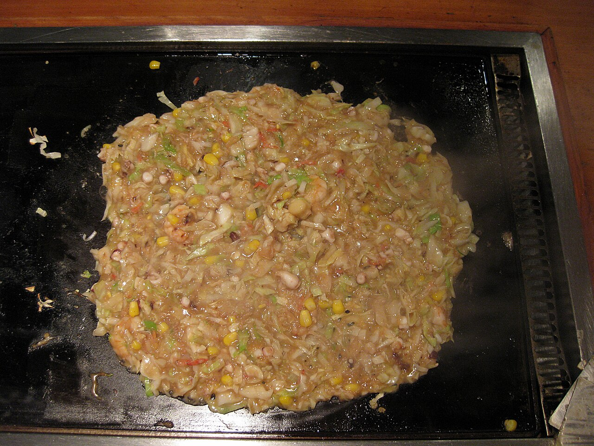

처음이라면
치즈와 떡 메뉴가 가장 편합니다.
치즈와 떡 메뉴가 가장 편합니다.
쓰키시마 몬자 거리를 먼저 보세요.
작은 주걱으로 눌러 조금씩 떠먹습니다.
몬자 입문
몬자야키는 밀가루 반죽에 양배추, 생강, 해산물, 치즈 같은 토핑을 섞어 철판에서 굽는 음식입니다. 한 장으로 자르기보다 얇게 펼쳐 조금씩 눌러 먹습니다.
처음 먹는 사람 추천 메뉴
몬자 종류
쫀득하고 고소한 입문 조합.
바다 향과 철판 향이 선명합니다.
맥주나 하이볼과 잘 맞습니다.
익숙한 매콤함으로 시작하기 쉽습니다.
카레 향으로 부담이 적습니다.
채소 중심의 담백한 선택.
지역별 몬자
GO TOKYO는 쓰키시마 몬자 거리를 대표 방문지로 소개합니다. 도쿄에서 로컬 음식을 더하고 싶을 때 좋은 코스입니다.
문화와 역사
농림수산성 자료는 철판에 글자를 쓰던 "모지야키"가 몬자로 변했다는 설명을 전합니다.
1950년대 무렵에는 간단한 간식으로 아이들에게 인기였다고 소개됩니다.
지금은 가족과 친구가 함께 굽는 도쿄의 일상 음식입니다.
먹는 방법
철판에 토핑을 먼저 볶습니다.
재료로 둑을 만들고 반죽을 붓습니다.
끓기 시작하면 섞어 얇게 펼칩니다.
가장자리를 눌러 한입씩 떠먹습니다.

여행자 가이드
한 줄 요약
처음이라면 부드러운 토핑으로 시작하고, 철판 위에서 천천히 바삭한 가장자리를 만들어보세요.